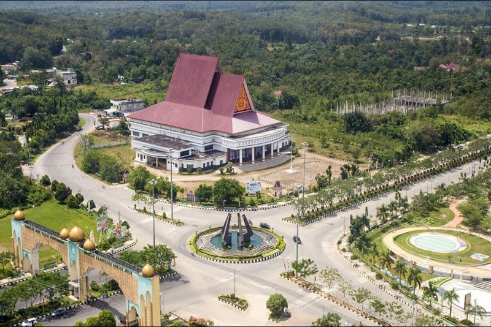
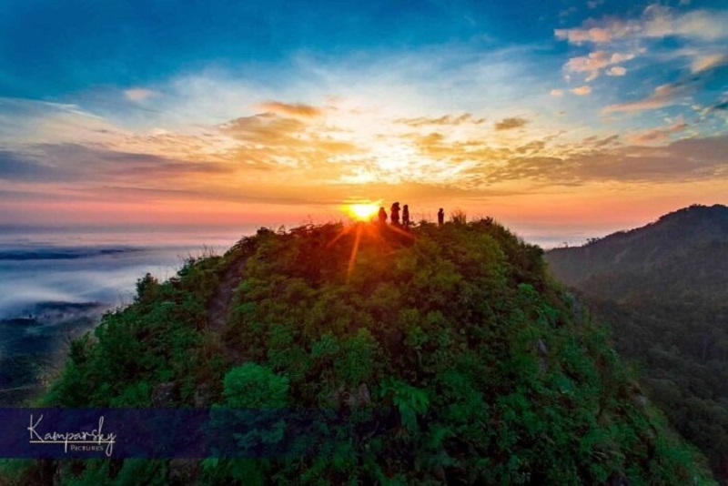
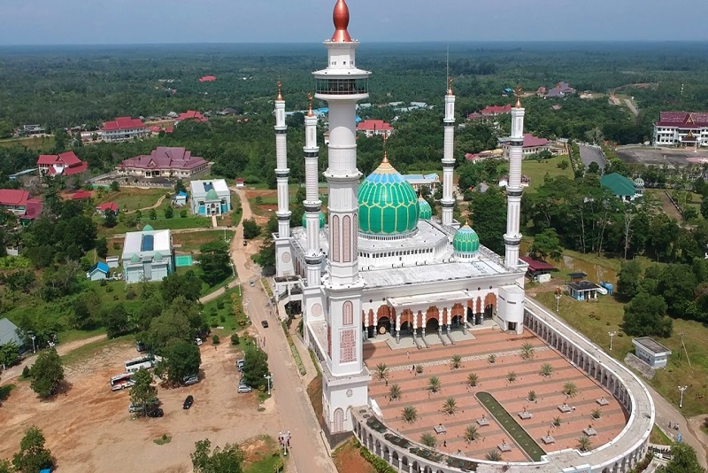
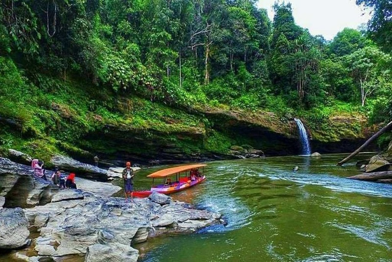

SEJARAH

Rokan Hulu (Rohul) merupakan wilayah yang terletak di bagian hulu nya Rokan, menurut riwayat, kata Rokan berasal dari bahasa Arab “rokana” artinya damai atau rukun. Rokan juga di sebut dengan "Rantau Rokan" atau tempat orang merantau dari Sumatera Barat. Kata Rokan ini juga di pakai sebagai nama sungai yang membelah Pulau Sumatera di bagian tengah, menuju utara sumatera (Selat Malaka), sungai ini merupakan sarana transportasi utama untuk menjangkau pusat-pusat perdagangan sampai ke negeri tetangga.
Nama Rokan telah ada sejak abad ke 13, sebagimana tercatat dalam buku “Negara Kartagama” Karangan Prapanca, tahun 1364 M syair ke 13, bahwa “Seluruh Pulau Sumatera (melayu) telah menjadi daerah yang berada di bawah kekuasaan Majapahit, meliputi Rakan (Rokan)". Rokan pada waktu itu merupakan telah ada kerajaan Rokan Tua, dengan pusat kerajaan berada di Koto Intan. Rokan juga disebut dalam Kronik Cina, maupun roteiros (buku-buku panduan laut) Portugis (Marguin 1364 M), Selanjutnya kata Rokan terdapat dalam buku Sulalatus Salatin, sebagaimana Muchtar Lutfi Wan Saleh dalam Sejarah Riau, bahwa abad 14-15 Raja Rokan (Rokan IV Koto) berasal dari keturunan Sultan Sidi ( Raja ke V Rokan IV Koto), saudara dari Sultan Sujak dari Sumatera Barat.
GEOGRAFIS

Rokan Hulu merupakan Kabupaten di Provinsi Riau, yang terletak di Barat Laut Pulau Sumatra pada 1000 - 1010 52´ Bujur Timur dan 00 15´ -10 30´ Lintang Utara. kabupaten yang diberi julukan Negeri Seribu Suluk ini mempunyai luas wilayah 7.449.85 Km2 dan berbatasan langsung dengan :
- Sebelah Utara, berbatasan dengan Provinsi Sumatra Utara dan Kabupaten Rokan Hilir
- Sebelah Barat, berbatasan dengan Provinsi Sumatra Utara dan Sumatra Barat
- Sebelah Timur, berbatasan dengan Kabupaten Kampar, Bengkalis dan Siak
- Sebelah Selatan, berbatasan dengan Provinsi Sumatra Barat.
Kabupaten Rokan Hulu berada pada ketinggian 70-86 Meter dari permukaan laut. Disebelah Barat Kabupaten mempunyai kontur tanah yang bergelombang yang merupakan bagian pegunungan Bukit Barisan ( 15 % ) sedangkan sebagian besar lainnya ( 85 % ) merupakan daerah rendah yang subur, terdapat tiga buah sungai besar yaitu :
- Sungai Rokan Kiri
- Sungai Rokan Kanan
- Sungai Sosah.
Kabupaten Rokan Hulu tergolong daerah beriklim trofis dengan temperatur udara berkisar antara 220 - 310 C, terdapat dua musim yaitu Musim Hujan dan Musim Kemmarau. Musim kemarau pada umumnya terjadi antara bulan Maret sampai dengan Agustus sedangkan Musim Hujan terjadi bulan September sampai dengan Januari.
WISATA
ISLAMIC CENTRE PASIR PENGARAIAN

Masjid Agung Islamic Centre Rokan Hulu ( MAIC Rohul) atau biasa juga disebut sebagai Masjid Agung Islamic Center adalah Masjid Agung sekaligus Islamic Center Kabupaten Rokan Hulu, provinsi Riau. Pembangunan-nya digagas oleh Bupati Rokan Hulu Drs. H. Achmad, M. Si, dan menjadi ikon Kabupaten Rokan Hulu. Pembangunan MAMIC Rokan Hulu dimulai pada Tahun 2008, dan diresmikan penggunaannya pada hari Jumat Tanggal 25 Syaban 1431 H, bertepatan dengan 06 Agustus 2010 M oleh Bupati Rokan Hulu Drs. H. Achmad, M. Si. Dengan menghadirkan Ustadz kondang, Dai Sejuta umat KH. Zainuddin MZ yang bertindak selaku Khatib pada Sholat Jumat saat itu.
MAMIC Rokan Hulu didirikan diatas lahan seluas 22 hektar dengan luas bangunan 15 800 meter persegi dan berdaya tampung mencapai 15.000 hingga 20 000 jemaah. Pembangunannya di danai dengan dana dari APBD Kabupaten Rokan Hulu, menghabiskan setidaknya 400 milyar Rupiah. Pelaksanaan bangunannya dipercayakan kepada PT. Citra Murni Semesta Jakarta sebagai Konsultan Perencana, PT. Holistika Prima Grahita sebagai konsultan pengawas dan kontraktor pelaksana PT. Total Bangun Persada.
SUNGAI ROKAN

Sungai Rokan merupakan sungai terbesar di Riau yang melintas sejauh 350 kilometer dari muaranya di Pegunungan Bukit Barisan, Rokan Hilir hingga ke hulunya di Rokan Hulu, sampai bermuara di Selat Malaka. Sebagai sungai terbesar, Sungai Rokan memainkan peranan penting sebagai lalu lintas penduduk dan sumber ekonomi masyarakat. Sungai-sungai lainnya adalah Sungai Kubu, Sungai Daun, Sungai Bangko, Sungai Sinaboi, Sungai Mesjid, Sungai Siakap, Sungai Ular dan lainnya.